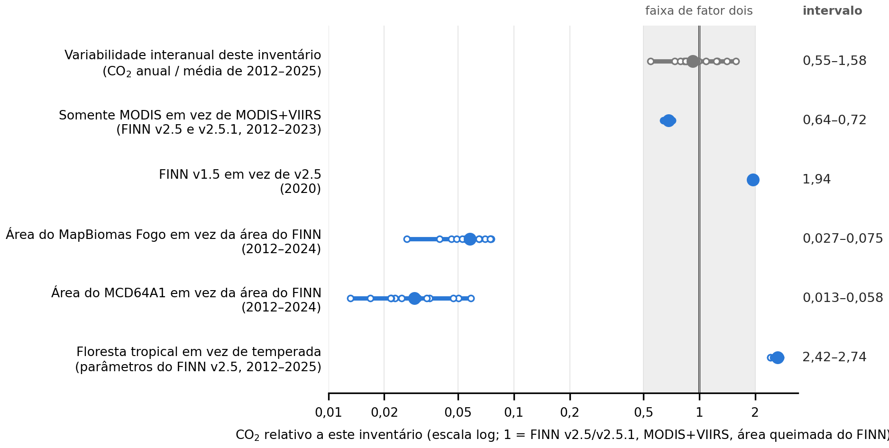
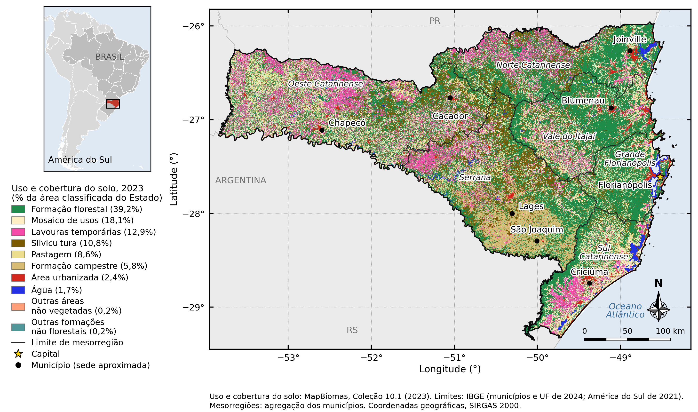
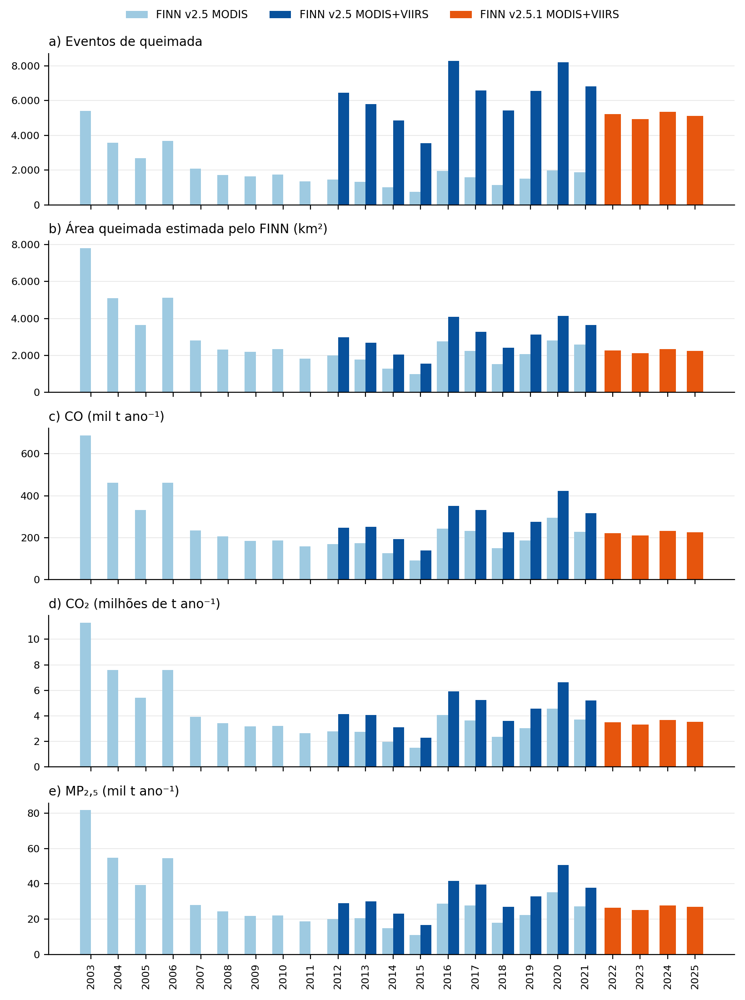
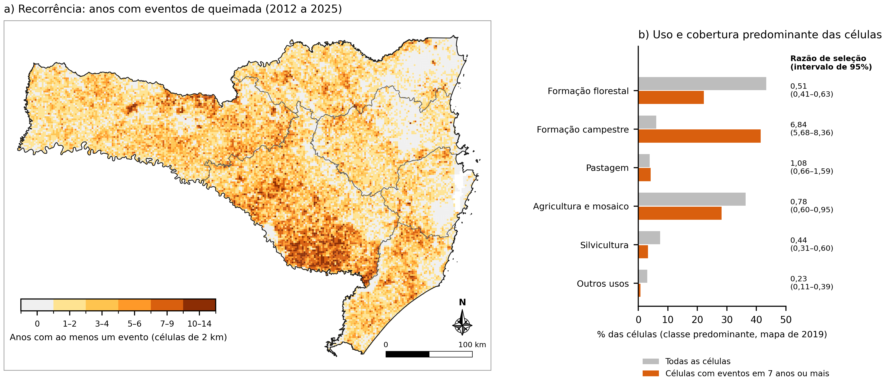
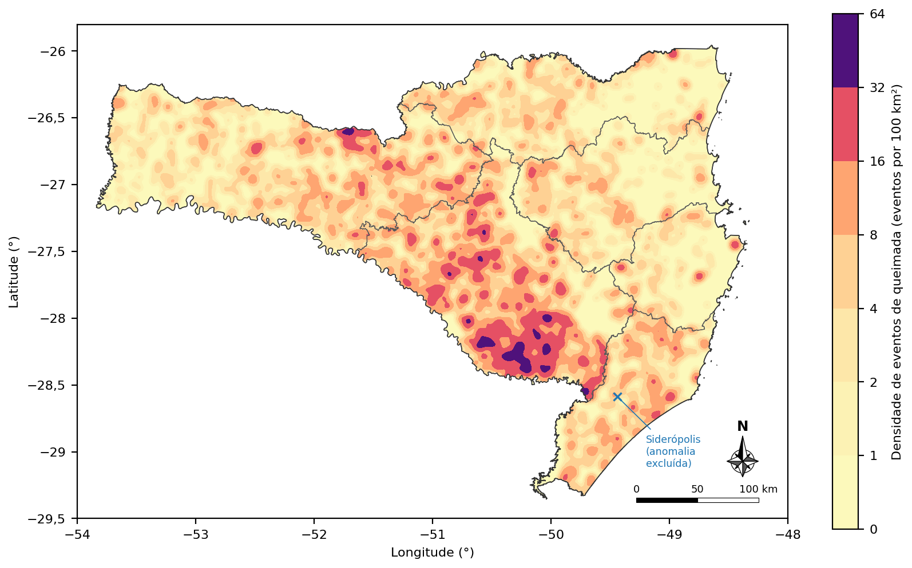

Leia os capítulos 2 a 4 para entender o estudo, os capítulos 5 a 7 para executá-lo e os demais quando precisar. Cada capítulo abre com esta caixa laranja, de modo que você pode parar nela e ainda guardar o essencial.
Ao final deste capítulo, você conseguirá:
| Se você quer… | Leia |
|---|---|
| saber o que o estudo encontrou, em linguagem simples | 2 |
| entender como satélites e o FINN estimam emissões | 3 e 4 |
| executar tudo e conferir os resultados | 5, 6 e 7 |
| rastrear um número publicado até o código | 8 |
| entender a estatística | 9 |
| comparar versões do FINN e outros inventários | 10 |
| montar o inventário de outra região | 11 e 12 |
Ideia-chave | A ideia que vale guardar da seção. |
Atenção | Um erro comum ou um limite dos dados. |
Faça | Comandos para digitar, na ordem. |
Confira | Como saber se deu certo. |
Para aprofundar (opcional) | Detalhe extra para especialistas; pode ser pulado. |
Nada neste tutorial é novo: cada número vem de um arquivo em results/, escrito por um script do repositório e conferido por um teste automático. Quando o texto traz um número, o capítulo ou a tabela do capítulo 8 indica de onde ele vem.
As emissões de queimadas em Santa Catarina variam muito entre os anos, mas três escolhas metodológicas alteram os totais tanto quanto ou mais que os anos: incluir as detecções VIIRS, a versão do FINN e a classe florestal. As comparações entre anos e municípios se mantêm; os totais absolutos carregam essas incertezas.
Ao final deste capítulo, você conseguirá:
3.549–8.296 eventos de queimada por ano, 2012 a 2025, sem tendência monotônica | 3,55 Mt de CO2 em 2025 (FINN v2.5.1, MODIS+VIIRS) | 2,9× razão entre o maior (2020) e o menor (2015) CO2 anual | 53,6% das células de 2 km dominadas por campo queimaram em 7 ou mais dos 14 anos |

python/analysis/fig_v71.py; valores em results/tables/sensitivity_factors.csv (a15_v7_review.py) e forest_class_scenario_annual.csv (a19_v72_followup.py).“Evento de queimada” aqui é um polígono diário de área queimada do FINN, uma unidade do modelo. Ele difere de um incêndio verificado em campo e de um foco de calor do INPE, por isso contagens de outras fontes só se comparam com as definições lado a lado (capítulo 3).
Satélites detectam o calor dos focos ativos. O FINN transforma cada detecção em área queimada, multiplica-a pela carga de combustível, pela fração queimada e pelos fatores de emissão e escreve uma linha (um registro) por detecção e tipo de vegetação. Contamos eventos de queimada, os polígonos diários de área queimada, depois de remover as fontes de calor persistentes.
Ao final deste capítulo, você conseguirá:
A queima a céu aberto libera CO2, CO, partículas finas (MP2,5), óxidos de nitrogênio e compostos orgânicos voláteis. Modelos de qualidade do ar, estudos de saúde e inventários climáticos precisam dessas emissões por local e por dia, e medições em solo não cobrem um Estado inteiro. Os inventários por satélite preenchem essa lacuna.
O MODIS (satélites Terra e Aqua) detecta focos ativos em pixels de 1 km; o VIIRS (Suomi NPP, NOAA-20) faz isso em pixels de 375 m e enxerga focos menores (Giglio et al., 2016; Schroeder et al., 2014). Cada satélite passa sobre um local cerca de duas vezes ao dia, de modo que focos que começam e terminam entre as passagens, ou sob nuvens, ficam de fora.
Para cada detecção, o FINN atribui uma área queimada (A) a partir do pixel e do mapa de vegetação, a carga de combustível (B) e a fração queimada (CF) do tipo de vegetação e um fator de emissão (EF) para cada composto (Wiedinmyer et al., 2011, 2023). Os tipos de vegetação são seis classes genéricas (GENVEG): campo e savana, savana arborizada e arbustos, floresta tropical, floresta temperada, floresta boreal e agricultura.
As contagens mudam com a unidade. Em 2025: 8.581 registros, 5.489 detecções e 5.160 eventos de queimada (5.121 após a triagem abaixo). Este repositório conta eventos de queimada, cada um atribuído ao município que contém a maior parte de sua área (a01_events_screening.py → state_counts.csv).
Algumas fontes de calor diferem de queimadas de vegetação: indústrias, minas, rejeitos de carvão em combustão. Um local com detecções em 16 ou mais dias de um ano civil, num raio de 1 km, é tratado como anomalia térmica persistente, o critério do produto MODIS (Giglio et al., 2021). Esses eventos saem das contagens e dos mapas e permanecem nos totais de emissão, onde sua participação é pequena (no máximo 2,5% do CO2, em 2020).
Os arquivos do FINN trazem os gases em mol/dia e os aerossóis (OC, BC, MP2,5) e alguns campos de massa em kg/dia. Toneladas de um gás = mol × massa molar (g/mol) × 10−6; toneladas de um aerossol = kg × 10−3. Nos arquivos do FINN v2.5, NOXasNO, NMOC e NMHC já são campos de massa (kg/dia); os NOx são expressos como massa de NO e os COV como NMOC (python/finn_sc/convert_units.py, conferido por a09_emission_factor_check.py).
A área queimada do FINN é a área atribuída pelo modelo a cada detecção, muito maior que a área mapeada a partir de cicatrizes: mediana de 17 vezes a do MapBiomas Fogo e 34 vezes a do MCD64A1 em Santa Catarina. Use-a como termo do modelo, e não como área queimada mapeada.
Este inventário usa o FINN v2.5 (2012 a 2021) e o v2.5.1 (2022 a 2025) com MODIS e VIIRS. Duas convenções do modelo pesam em Santa Catarina: o FINN v1.5 acrescenta cópias dos focos no dia seguinte (o v2.5 não faz isso nestas latitudes), e as duas versões classificam as florestas do Estado como temperadas, porque ele está ao sul de 23,5° S.
Ao final deste capítulo, você conseguirá:
| Versão | Detecções | Anos | Arquivo (GEOS-Chem, cada foco) |
|---|---|---|---|
| v1.5 | MODIS | 2002–2020 | FINNv1.5_<year>.GEOSCHEM.tar.gz (anual, todos os anos) |
| v2.5 | MODIS | 2003–2021 | FINNv2.5_mod_GEOSCHEM_<year>_c2021…txt.gz |
| v2.5 | MODIS+VIIRS | 2012–2021 | FINNv2.5_modvrs_GEOSCHEM_<year>_c2021…txt.gz |
| v2.5.1 | ambos | 2022–2023 | arquivos mensais |
| v2.5.1 NRT | MODIS+VIIRS | 2024– | arquivos diários em tempo quase real |
Os endereços exatos são montados por R/utils_finn.R e python/finn_sc/download.py. O arquivo do FINN v1.5 de 2002 também é um arquivo .tar.gz; um endereço antigo .txt.gz retorna “404 Not Found” (corrigido em 11/11/2026).
Como o MODIS não observa as latitudes baixas e médias todos os dias, o FINNv1 conta cada detecção por dois dias, o segundo com metade do tamanho, a menos que o local seja detectado de novo; seus autores registraram que esse pressuposto ainda não havia sido verificado (Wiedinmyer et al., 2011). Em 2020, 1.893 dos 4.609 registros do FINN v1.5 em Santa Catarina eram essas continuações, 27,0% do CO2 (a17_v72_review.py). O FINN v2.5 mantém a regra apenas entre 23,5° N e 23,5° S (Wiedinmyer et al., 2023), e nossos registros do FINN v2.5 e v2.5.1 confirmam isso: 1 de 151.443 pares dia-local tem a assinatura de metade do tamanho (a20_finn15_correction.py).
O FINN v2.5 classifica florestas perenifólias latifoliadas e mistas como floresta tropical apenas entre 23,5° N e 23,5° S, e como floresta temperada nas demais latitudes (Wiedinmyer et al., 2023, Tabela 1). Santa Catarina (25,96° S a 29,36° S) fica fora dessa faixa, embora suas florestas pertençam à Mata Atlântica. A classe define a carga de combustível: na América do Sul, 26.755 g m−2 para floresta tropical e 7.400 g m−2 para temperada. Com a classe tropical, cada detecção em floresta emitiria 3,93 vezes mais CO2, e o CO2 anual do Estado seria 2,42 a 2,74 vezes maior (a19_v72_followup.py), um limite superior, porque a classe também inclui florestas decíduas.
Há duas rotas. A rota B recalcula offline cada número do artigo a partir dos registros arquivados. A rota A baixa os arquivos do FINN no NSF NCAR e monta os registros, para Santa Catarina ou qualquer outra região.
Ao final deste capítulo, você conseguirá:
FINN_SC/ ├── README.md, README.pt-BR.md comece aqui ├── TUTORIAL_FINN_SC_en.pdf, _pt.pdf este tutorial ├── config/config.yml todos os parâmetros (anos, versão, região) ├── data/derived/ registros FINN de SC arquivados (entrada da rota B) ├── data/external/ MapBiomas, MCD64A1, ERA5-Land, IBGE, registros FINN v1.5 ├── data/inputs/ malha municipal do IBGE 2024 de SC ├── python/00_ … 06_*.py rota A em Python ├── python/analysis/a01 … a20 rota B: um script por grupo de resultados ├── python/run_analysis.py rota B em um comando ├── R/ rota A em R; densidade kernel ├── gee/ receitas do Google Earth Engine ├── notebooks/ notebooks da rota A; comparação com o BRAIN ├── tools/ mapas, ferramentas do FINN v1.5, conferência do manifesto ├── tests/ 96 testes automáticos ├── results/ tabelas, figuras e logs publicados └── docs/ métodos, procedência, dicionário de dados
A rota B parte de data/derived/finn_sc_records_2003_2025.csv.gz: 258.694 registros do FINN v2.5 e v2.5.1 em Santa Catarina. Ela dispensa internet e download do FINN.
| Script | Pergunta |
|---|---|
a01 | Quantos registros, detecções e eventos? Quais são anomalias persistentes? |
a02 | Séries anuais, Tabela 2, efeito do VIIRS, testes de tendência |
a03 | Municípios e mesorregiões em 2025; sazonalidade |
a04 | Área e emissões por tipo de vegetação (GENVEG) |
a05 | Área do FINN vs MapBiomas Fogo |
a06 | Atividade de fogo vs clima da estação de queimadas |
a07 | Cobertura do solo municipal vs densidade de eventos |
a08–a09 | Indicadores do relatório; conferência das unidades |
a10 | Figuras do manuscrito e do relatório anteriores |
a11–a12 | Perguntas dos coautores; resultados do Earth Engine (MCD64A1, ERA5-Land) |
a13 | Recorrência do fogo em células de 2 km e cobertura do solo |
a14 | Verificações de validade (vegetação do FINN vs MapBiomas, bootstrap) |
a15 | Robustez: testes de tendência exatos, razão do VIIRS, fatores de sensibilidade |
a16–a17 | FINN v1.5 vs v2.5 em 2020; continuações no dia seguinte |
a18 | Exportações dos municípios e mesorregiões (Comex Stat) |
a19 | Cenário da classe florestal; NOx do inventário anterior |
a20 | Inventários do FINN v1.5 com e sem as continuações, 2002 a 2020 |
Três comandos: instalar, executar, conferir. Se os testes disserem 96 passed e o manifesto disser 107 files: OK 107, seu computador reproduziu todos os números publicados.
Ao final deste capítulo, você conseguirá:
git clone https://github.com/jessicajcss/FINN_SC.git cd FINN_SC conda env create -f environment.yml && conda activate finn # ou: python -m pip install -r requirements.txt Rscript install_r_packages.R # opcional: R para a densidade kernel
python python/run_analysis.py --no-r
# sem --no-r também roda o R (a sensibilidade anual da densidade leva cerca de 40 min)Atalhos: make reproduce, ./run_all.sh analysis (Linux, macOS) ou run_all.bat analysis (Windows).
python -m pytest -q tests # 96 passed python tools/verify_manifest.py # 107 files: OK 107
O manifesto (results/MANIFEST.sha256) guarda o SHA-256 de cada tabela e log publicados (as figuras ficam de fora, porque os arquivos PNG carregam a versão da biblioteca em seus metadados). OK indica bytes idênticos; EQUIVALENT indica que todos os números concordam dentro de uma tolerância relativa de 10−9, como ocorre quando outra versão de biblioteca imprime um último dígito diferente. Faça a conferência num clone recém-baixado, sem commits antes dela.
| Pasta | Conteúdo |
|---|---|
results/tables/ | tabelas CSV, uma ou mais por script |
results/figures/ | figuras PNG (inglês _en, português sem sufixo; _nn = sem nota dentro da imagem) |
results/logs/ | um log de texto por script, com todos os números impressos |
Execute os comandos a partir da raiz do repositório (a pasta que contém o README.md). A maioria dos erros de “arquivo não encontrado” vem de executá-los dentro de uma subpasta.
Quatro figuras contam a história: onde fica o Estado (Figura 1), como os anos variaram (Figura 2), onde o fogo se repete (Figura 3) e quanto pesam as escolhas metodológicas (Figura 4, capítulo 2).
Ao final deste capítulo, você conseguirá:

tools/study_area_map.py.
series_state_all_products.csv (a02).Compare os anos dentro de uma mesma cor (uma configuração do FINN). Saltar entre cores mistura a mudança dos focos com a mudança do método.

python/analysis/fig_v71.py; dados de a13_recurrence_landcover.py.
R/analysis/kde_events.R.python/analysis/fig_v71.py.Cada valor do manuscrito da ES&T tem um script, um arquivo de saída e uma linha de log. A tabela abaixo lista os principais; docs/results_map.md lista os números do manuscrito anterior e do relatório.
Ao final deste capítulo, você conseguirá:
| Valor publicado | Script (python/analysis/) | Saída (results/tables/) |
|---|---|---|
| 3.549–8.296 eventos por ano (2012 a 2025) | a02_series_trends.py | series_state_all_products.csv |
| 3,55 Mt de CO2 em 2025 (Tabela 2) | a02_series_trends.py | table2_state_emissions_2012_2025.csv |
| CO2 máx./mín. entre anos 2,88 | a15_v7_review.py | log a15_v7_review.txt |
| ρ de Spearman = −0,68 com a precipitação | a06_climate_drivers.py | climate_correlations.csv |
| 53,6% das células de campo queimaram ≥ 7 de 14 anos | a13_recurrence_landcover.py | recurrence_by_landcover.csv |
| VIIRS: CO2 +39,6% a +56,2% | a02_series_trends.py | viirs_effect.csv |
| FINN v1.5 / v2.5 MODIS = 2,82 (2020) | a17_v72_review.py | finn15_v25_2020_decomposition.csv |
| Continuações: 27,0% do CO2 (2020) | a17_v72_review.py | finn15_2020_continuation_rule.csv |
| Classe de floresta tropical: × 2,42 a 2,74 | a19_v72_followup.py | forest_class_scenario_annual.csv |
| Área do FINN / MapBiomas Fogo: mediana 17,2 | a05_mapbiomas_comparison.py | mapbiomas_state.csv |
| Área do FINN / MCD64A1: mediana 34,4 | a12_gee_review_outputs.py | mcd64a1_comparison_summary.csv |
| Inventário anterior = todos os registros do FINN v1.5 × 1,002 | a20_finn15_correction.py | finn15_lcqar_2020_correction.csv |
| BRAIN 2019 = registros × 1,010, originais × 1,390 | a20_finn15_correction.py | finn15_2019_correction.csv |
| Continuações 27,0–32,4%, 2002 a 2020; Teixeira = todos os registros | a20_finn15_correction.py | finn15_2002_2020_correction.csv |
| Figura 2 | figures_est_en.py | Fig02_annual_series_4p_en.png |
| Figuras 3 e 4 | fig_v71.py | Fig08_…, Fig09_…_nn_en.png |
| Resumo gráfico (TOC) | figures_est_v72.py | TOC_graphic_est_v72.png |
python -c "import pandas as pd; t = pd.read_csv('results/tables/table2_state_emissions_2012_2025.csv'); print(t.loc[t.year == 2025, 'CO2'])"
# 13 3.554771e+06 (tonnes)Os testes em tests/ afirmam esses valores. Se uma mudança no código alterar um número publicado, um teste falha e indica qual.
results/tables/table2_state_emissions_2012_2025.csv, written by a02.Testes baseados em postos (Mann–Kendall, Sen, Spearman) para séries curtas e assimétricas; correção de Holm para testes múltiplos; modelos espaciais quando municípios vizinhos se parecem; bootstrap por blocos espaciais para a recorrência; densidade kernel com várias larguras de banda.
Ao final deste capítulo, você conseguirá:
| Método | Pergunta que responde | Onde |
|---|---|---|
| Teste de Mann–Kendall e inclinação de Sen (Mann, 1945; Kendall, 1975; Sen, 1968) | Há tendência monotônica ao longo dos anos, e com que inclinação? | a02, a15 |
| Correção de Hamed–Rao (Hamed e Rao, 1998) | A autocorrelação entre anos altera o teste de tendência? | a02 |
| Correlação de Spearman com correção de Holm (Holm, 1979) | Os eventos acompanham o clima da estação de queimadas, testando várias variáveis? | a06 |
| I de Moran e modelo de erro espacial (Moran, 1950; Arraiz et al., 2010) | A cobertura do solo se associa à densidade de eventos, considerando os vizinhos? | a07, a13 |
| Razão de seleção com bootstrap por blocos espaciais | O fogo cai numa classe de cobertura mais do que sua área indicaria? | a13, a14 |
| Densidade kernel (Diggle, 1985; Cronie e van Lieshout, 2018; Baddeley et al., 2015) | Onde os eventos de 2025 se concentram? | kde_events.R |
Com 14 anos, um teste de tendência tem pouco poder: “sem tendência significativa” quer dizer que os dados não distinguem uma tendência da variação entre anos, e o artigo relata o resultado nesses termos.
Razões entre duas contagens que compartilham um termo podem se correlacionar por construção (Kronmal, 1993). Por isso o incremento do VIIRS é analisado como diferença e contra medidas independentes (a15).
Largura de banda da densidade kernel: o mapa principal usa σ = 2,8 km; o critério de Cronie–van Lieshout dá 8,8 km e a regra de Scott, 21,7 km. A concentração na Serrana se mantém com essas larguras (kde_2025_bandwidths.csv, kde_2025_sensitivity_mesoregion.csv).
Para as mesmas detecções de 2020, o FINN v1.5 dá 2,82 vezes o CO2 do FINN v2.5. O inventário estadual anterior, o BRAIN e Teixeira et al. (2025) usaram o FINN v1.5 com suas continuações no dia seguinte; removê-las reduz seus totais em 27,0% a 32,4% por ano.
Ao final deste capítulo, você conseguirá:
Os quatro fatores se multiplicam até a razão total: as continuações (1/0,730), quase o mesmo número de detecções (0,990), 16% mais área por detecção (1,159) e 58% menos CO2 por km² (0,423), sobretudo porque detecções em floresta passaram da classe tropical para a temperada. Uma decomposição estrutural atribui 75% da mudança ao interior das classes de vegetação e 25% à partição entre elas (a17_v72_review.py).
| Estudo (FINN v1.5) | A que equivale | Sem continuações |
|---|---|---|
| LCQAR (2022), SC 2020 | todos os 4.609 registros × 1,002 (seus 4.625 “focos” são registros) | 1,37 × as 2.716 detecções originais |
| BRAIN 2019 (Hoinaski et al., 2024) | todos os registros × 1,010 | × 1,390 |
| BRAIN 2020 | 31% do seu CO em células-dia sem detecção original | inclui as continuações |
| Teixeira et al. (2025), 2002 a 2017 | soma de todos os registros em 15 de 16 anos (2016: 0,36% abaixo) | 27,0–32,4% do CO2 anual são continuações |
Os registros do FINN v1.5 de 2002, 2016 e 2017 vêm dos arquivos anuais do NCAR. tools/download_finn15_years.R baixa e confere esses arquivos; tools/finn15_raw_to_grid.py recorta cada arquivo na caixa do Estado e converte para toneladas; tools/finn15_records.py atribui os registros aos municípios. No arquivo de 2015, essa rota reproduziu todas as 3.537 linhas do processamento anterior.
Rscript tools/download_finn15_years.R python tools/finn15_raw_to_grid.py FINNv1.5_2016.GEOSCHEM.tar.gz 2016 data/raw_finn/finn15 python tools/finn15_records.py <pasta_dos_autores> data/raw_finn/finn15
Compare as versões do FINN no texto, com suas configurações explícitas. Colocar os totais do FINN v1.5 e do v2.5 no mesmo eixo convida a uma comparação direta que as convenções diferentes não sustentam.
Coloque seus limites em data/inputs/, edite o config/config.yml e rode as etapas 00 a 05. Comece com um ano: os arquivos globais do FINN são grandes.
Ao final deste capítulo, você conseguirá:
data/inputs/.config/config.yml, defina region.boundaries_shp, region.region_field e region.name, e escolha anos, versão e sensor em selection.make all-py # or ./run_all.sh python, or run_all.bat python
python python/00_download_finn.py
python python/01_convert_units.py
python python/02_clip_region.py
python python/04_aggregate_region.py
python python/05_descriptive_analysis.pyAbra data/output/aggregated_emissions_all.shp no QGIS ou leia o CSV de mesmo nome.
tests/test_route_a.py replica os 2.341 registros de 1º de janeiro a 28 de maio de 2025 em Santa Catarina a partir dos arquivos do NCAR, de modo que a rota A é testada contra a rota B.
Fora da faixa de 23,5° S a 23,5° N, o FINN v2.5 classifica as florestas como temperadas (capítulo 4). Informe essa escolha, e a fonte de detecção, sempre que publicar totais de outra região.
config/config.yml.A rota B roda no Colab como em qualquer computador. Os dados externos (MapBiomas, MCD64A1, ERA5-Land) vêm dos notebooks do Earth Engine em gee/, que precisam de um projeto registrado no Google Cloud.
Ao final deste capítulo, você conseguirá:
/content/FINN_SC e rode a rota B com --no-r.gee/, defina PROJECT = "<ID do seu projeto>" na célula 2 e rode tudo; a célula 3 chama ee.Authenticate() e ee.Initialize(project=PROJECT).!git clone https://github.com/jessicajcss/FINN_SC.git /content/FINN_SC %cd /content/FINN_SC !pip install -q -r requirements.txt !python python/run_analysis.py --no-r !python -m pytest -q tests
Os notebooks terminados em _run_2026-10-21.ipynb guardam as saídas das execuções usadas no artigo, para você comparar as suas célula a célula.
PROJECT.A maioria dos problemas está no ambiente, na pasta de trabalho ou num endereço de download. A tabela traz a solução.
| Sintoma | Solução |
|---|---|
ModuleNotFoundError | Ative o ambiente (conda activate finn) ou instale o requirements.txt. |
“arquivo não encontrado” em results/ ou data/ | Execute a partir da raiz do repositório. |
| Um teste falha depois de mudar o código | Leia o nome do teste: ele diz qual número publicado mudou. |
verify_manifest.py acusa DIFFERENT | Instale as versões fixadas em requirements-lock.txt e rode de novo; o script mostra as maiores diferenças. |
| O download do FINN retorna 404 | Confira o endereço em R/utils_finn.R; os arquivos do FINN v1.5 são .tar.gz em todos os anos. |
| O Earth Engine pede um projeto | Registre um (capítulo 12) e defina PROJECT. |
| A etapa em R é lenta | Use --no-r; a sensibilidade anual da densidade kernel leva cerca de 40 minutos. |
Termos em uma linha cada, as fontes citadas neste tutorial e uma lista de seis itens antes de relatar resultados.
| Foco ativo | calor detectado por um pixel de satélite no momento da passagem |
| BRAIN | Brazilian Atmospheric Inventories, base de emissões para modelagem da qualidade do ar (Hoinaski et al., 2024) |
| Continuação (no dia seguinte) | a cópia com metade do tamanho de um registro do FINN v1.5 acrescentada no dia seguinte |
| Detecção | um pixel de satélite em um dia (dia + FIREID) |
| Evento de queimada | um polígono diário de área queimada do FINN (dia + POLYID) |
| GENVEG | o tipo genérico de vegetação de um registro do FINN |
| Mesorregião | agrupamento de municípios do IBGE; Santa Catarina tem seis |
| NRT | arquivos em tempo quase real, produzidos diariamente |
| Registro | uma linha de um arquivo do FINN |
| Rota A / Rota B | replicação a partir dos arquivos do NCAR / reprodução a partir dos registros arquivados |
run_analysis.py terminou sem erro